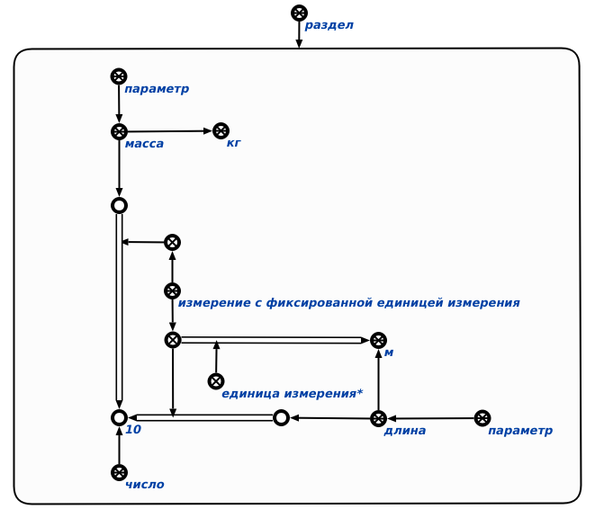
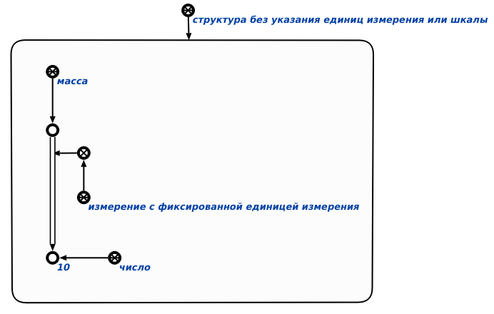

Команда проверки указания шкалы или единицы измерения для значений параметров в рамках заданной структуры предназначена для поиска параметров, которые имеют некорректную спецификацию. Единственным аргументом команды является раздел базы знаний, в рамках которого производится поиск параметров, для которых не указаны либо единица измерения, либо шкала. Результатом выполнения команды является формирование структуры, содержащей параметры с некорректной спецификацией. Пример выполнения команды показан ниже (слева - исходный раздел, справа - сформированная структура):

